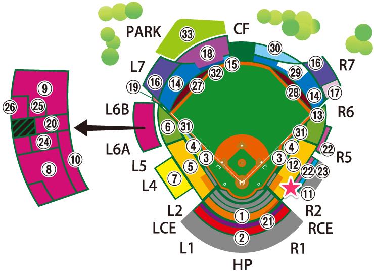

内野指定席1塁側A（B20列24番）

席について
1塁側の内野指定席の最上段。
眺め
ある程度高さがあるので、視界にネットが飛び込むこともなく、フィールド全体を見渡せる。
バッターボックスにもそこそこ近い上に、視界がバックネットに被っていないので非常にクリアで臨場感ある視点で楽しめる。
楽天側ベンチも見えるので、個人的には3塁側ベンチ上よりも好きな眺めかもしれない。
視線の向き的に、試合と同時に観覧車の様子や（写真撮影当時には観覧車はなかったが）、ビジョンを視線移動少なく楽しめる。
かなりオススメできる席。